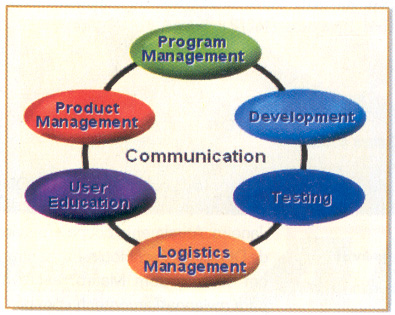

No início da década de 80, criou-se um processo unificado para desenvolvimento de software, que acabou evoluindo para o Rational Unified Process (RUP). Foi realizado um estudo que buscava estudar as características de vários projetos de software que haviam fracassado para tentar identificar as principais causas dos erros e elaborar uma forma padronizada e eficiente para o desenvolvimento de softwares. Com base nisso, e em outros processos de software existentes na época, nasceu o RUP, um conjunto de boas práticas de desenvolvimento de software. Uma das principais idéias do RUP é quebrar o desenvolvimento em várias iterações, cada uma das quais podendo conter atividades de análise de requisitos, projetos, implementações e testes, porém em níveis de atividade diferentes dependendo da fase em que o projeto se encontra e do tamanho real do projeto.
| Modelo de Equipe | ||
| Papel | Responsabilidade | Objetivo |
| Product Management | Representar o cliente para a equipe e vice-versa | Satisfação do cliente |
| Program Management | Gerenciar o andamento do projeto e atuar como um facilitador | Manter prazo e custo dentro do estimado |
| Development | Projeto e construção da solução | Atender à especificação do projeto |
| Testing | Testar a solução | Abordar os problemas antes da entrega do produto |
| User Education | Identificar as necessidades e treinar o usuário | Otimizar a performance do usuário |
| Logistics Management | Planejar e executar a logística necessária | Garantir uma boa implantação e manutenção |
O princípio básico deste modelo é que cada um desses papéis aborda um objetivo importante para o projeto. Por isso todos os papéis devem estar representados e poder comunicar-se entre si, além de participar das decisões de projeto. Por exemplo, ao longo do projeto o Product Manager pode identificar uma funcionalidade de grande importância para o cliente, mas que não foi especificada no início. Conversando com o Developer e Tester, foi identificado que serão gastos mais 5 dias para implementação e testes desta funcionalidade. User Education e Logistics não relataram impacto significativo.
O modelo de processos do MSF prevê 4 fases : Envisioning, Planning, Developing e Stabilizing. Cada fase descreve um conjunto de subprodutos que devem ser entregues, assim como marcos que devem ser atingidos e os respectivos critérios de aceitação
A primeira fase, Envisioning, tem como produto principal um documento de visão e escopo. Este documento formaliza de forma suscinta a visão do que será o projeto. O marco de término desta fase é a aprovação da visão por todas as partes envolvidas. Neste ponto todos têm um entendimento geral do projeto e dos recursos necessários. Com base nesta visão é tomada a decisão sobre a continuidade ou não do projeto.
A fase seguinte, Planning, tem como produto o plano do projeto, que é composto de subprodutos, dos quais destacamos a especificação funcional e o cronograma da etapa de desenvolvimento. O marco de término é a aprovação do plano de projeto, composto pelos diversos subprodutos. Neste momento já se tem uma visão detalhada do projeto, bem como maior precisão nos prazos e recursos necessários. Mais do que isso, toda a execução do projeto estará devidamente planejada.
Em seguida, vem a fase de Developing, que é quando construímos a solução propriamente dita. Esta fase gerará diversas versões intermediárias, que servirão como pontos de checagem e testes. O critério de término desta fase é que o escopo esteja completo, ou seja, todas as funcionalidades planejadas estejam implementadas.
A quarta e última fase é a Stabilizing. Ela é dedicada a testes sistêmicos e acertos de bugs e de funcionalidades não adequadas a necessidade do usuário. Novamente são geradas várias versões (alfas e betas). Ela termina quando existe um consenso sobre a qualidade final do produto.
fontes:http://www.linhadecodigo.com.br/artigo/78/conheca-o-microsoft-solutions-framework-msf.aspx https://www.devmedia.com.br/conceitos-iniciais-sobre-o-microsoft-solutions-framework-msf-para-desenvolvimento-agil-de-softwares/10614